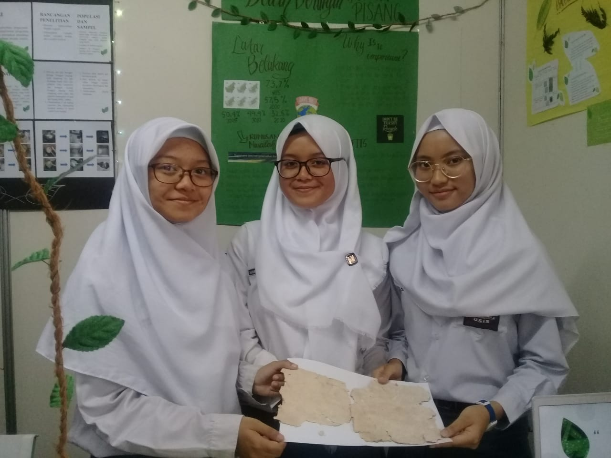
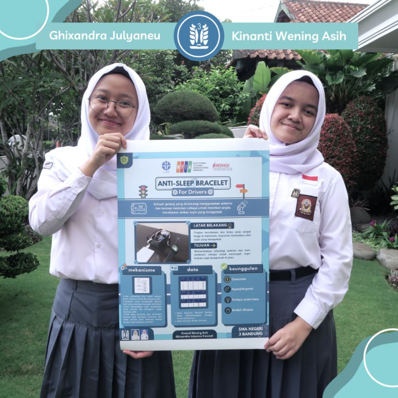
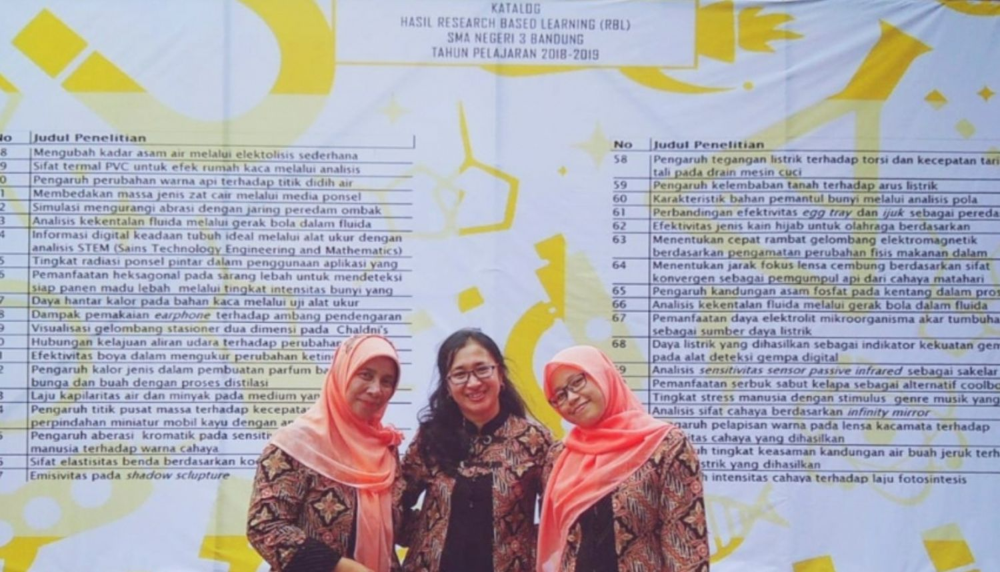

RBL SMAN 3 BANDUNG
Research Based Learning SMAN 3 BANDUNG
situs ini membingkai dan mempromosikan proses pembelajara berbasis RESEARCH BASED LEARNING DI SMAN 3 BANDUNG sejak tahun 2011
Dr.diana susyari mardijanti ,S.pd, M.PFIS
Guru Mata pelajaran Fisika
Pengagas dan pembimbing Research Based Learning (RBL) SMAN 3 Bandung
Belajar merupakan proses memperkaya dan mengembangkan diri bersama ilmu pengetahuan. Proses belajar tidak harus selalu menghadapi buku, alat elektronik atau berlatih keras dengan banyak ragam soal yang tingkat kesulitannya tinggi. Kecerdasan dapat diasah dengan kreativitas yang memunculkan ide inovatif yang dilatarbelakangi multi disiplin ilmu pengetahuan yang saling terkait satu sama lain. Research Based Learning (RBL) merupakan proses pembelajaran berbasis riset yang melalui tahapan metoda ilmiah. Model pembelajaran ini akan memberikan kesempatan seluas-luasnya pada siswa untuk mengekspresikan design thinking berdasarkan empati terhadap lingkungan ke dalam topik penelitian yang menjadi pilihan siswa . RBL tidak hanya untuk memenuhi penyelesaian tahapan belajar namun untuk membangun critical thinking dan analytical thinking sehingga melalui RBL ini siswa akan mengalami pembelajaran secara menyeluruh dan mampu mengimplementasikan literasi sains secara sistematis. ***Everyday I’m getting better and better***
menghasilkan APRESIASI 32|| SEJAK TAHUN 2011|| SISWA TERLIBAT 3000+|| KARYA TULIS
800+|| 